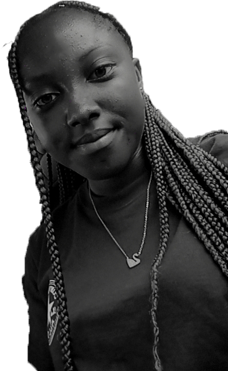

Développement web
Conception de sites et d'applications web, du back-end à l'interface.
Étudiante en 3ème année de Licence informatique, option génie logiciel. Je conçois des applications web et des projets d'intelligence artificielle, avec une vraie passion pour les nouvelles technologies.

Je suis une personne curieuse et créative, à l'aise dans le travail en équipe. J'ai le sens de la ponctualité et de l'assiduité, et j'aime apprendre de nouvelles choses, que ce soit en lisant ou en construisant des projets.
En dehors des cours, je fais de la pâtisserie : un autre domaine où la précision et la créativité comptent autant qu'en programmation.
Conception de sites et d'applications web, du back-end à l'interface.
Modèles de machine learning, analyse de données et reconnaissance.
Réalisation de mini-projets et de projets de taille moyenne en robotique.
Une sélection de mes projets, tous disponibles sur GitHub.
Application web avec assistant IA, comptes utilisateurs, globe interactif, modèle de secours et intégration continue.
Voir sur GitHubSystème de reconnaissance faciale pour la gestion automatique des présences, avec registre exportable.
Voir sur GitHubExploration, préparation des données et comparaison de modèles : régression logistique, Random Forest, XGBoost et LightGBM.
Voir sur GitHubAssistant vocal et texte capable de comprendre et répondre en dioula et en baoulé.
Voir sur GitHubUniversité des Technologies d'Abidjan, Riviera Palmeraie
Lycée Moderne de Port-Bouët, Abidjan
Collège Les Phalènes, Yopougon (Abidjan)
Groupe scolaire Ghandhi, Yopougon (Abidjan)